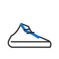
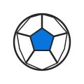
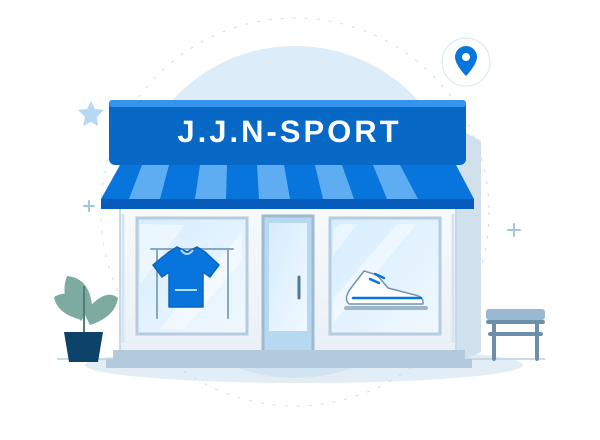

COLLECTION / 01
J.J.N-SPORT · Sport do‘koni
Sportga yaqin.
Sizga yaqin.
Har bir katta maqsad birinchi qadamdan boshlanadi. Kattaqo‘rg‘ondagi J.J.N-SPORT bilan tanishing — sport, faol hayot va yangi marralar sari bir manzil.
SHUNCHAKI SPORT EMAS. HAYOT TARZI.
Yaqin manzilKattaqo‘rg‘on, Samarqand
Yo‘lingizni rejalangXarita va tashrif ma’lumotlari
Avval tanishingDo‘kon haqida bir sahifada
01 / Do‘kon haqida
Sportni sevamiz.
Harakatni qadrlaymiz.
J.J.N-SPORT — Kattaqo‘rg‘ondagi sport do‘koni. Biz uchun sport — musobaqa bilan birga, har kuni o‘zingiz uchun ajratgan vaqt, yangi odat va oldinga tashlangan qadam.
Bu yerda do‘kon bilan tanishib, manzilni topishingiz va tashrifingizni rejalashtirishingiz mumkin. Yaqindan tanishish uchun do‘konga marhamat.
Bizni xaritadan topingBir shahar. Bir manzil.Kattaqo‘rg‘on, Samarqand viloyati
Birgalikda harakatdaSportga qiziqqan har bir inson uchun
J.J.N
HARAKAT / HAR KUNI
02 / Sport yo‘nalishlari
Harakat har xil.
Sport ruhi bir.
Mashg‘ulotdan kundalik faollikkacha — do‘konning sport yo‘nalishlari bilan tanishing. Aniq assortiment va mavjudlikni tashrif vaqtida aniqlashtiring.
COLLECTION / 02

COLLECTION / 03

03 / Tashrif imkoniyatlari
Kerakli ma’lumot.
Bir joyda.
Faol hayotga bir qadam yaqinroq. Qiziqqan yo‘nalishingiz bilan tanishing, manzilni toping va tashrifingizni rejalashtiring.

Harakatning o‘z manzili bor.Do‘konning badiiy tasviri, haqiqiy fotosurat emas.
01
Sportingizdan boshlang.
Kiyimlar, oyoq kiyimlar yoki sport anjomlari. Sizga qiziq bo‘lgan yo‘nalishni toping va assortimentni do‘konda aniqlang.
Yo‘nalishlar bilan tanishish02
Manzil bir qarashda.
Xarita, joylashuv va ko‘rsatilgan ish vaqti bir joyda. Kelishdan oldin yo‘lingizni rejalashtirish osonroq.
Manzilni ko‘rish03
Savollaringiz bilan keling.
Kerakli o‘lcham, narx va mavjud tanlov haqida tashrif paytida so‘rang. Saytdagi foydali javoblarni ham ko‘rib chiqing.
Savol-javoblarni o‘qish04 / Tashrif qo‘llanmasi
Uch qadam.
Bitta manzil.
Yo‘lni belgilang
Kattaqo‘rg‘ondagi joylashuvni xaritada ko‘ring. Yo‘lga chiqishdan avval belgilangan nuqtani tekshiring.
Xaritaga o‘tishVaqtni rejalang
Ko‘rsatilgan jadval: har kuni 08:00–20:00. Ish vaqti o‘zgarishi mumkin — kelishdan oldin tekshiring.
Jadval real vaqtda tasdiqlanmagan.Keling, tanishing
Sizga kerakli sport yo‘nalishi, o‘lcham va istaklaringizni ayting. Mavjud assortimentni joyida so‘rab biling.
Foydali javoblar05 / Manzil va tashrif
Yaqinroq keling.
Yaqindan tanishing.
Manzil va xarita havolasi sizga do‘konni topishga yordam beradi. Ish vaqti hamda boshqa ma’lumotlar o‘zgarishi mumkin, tashrifdan oldin tekshiring.
J.J.N-SPORT
Sport do‘koni · Google Maps listingi
ManzilKattaqo‘rg‘on, Samarqand viloyati, O‘zbekiston
Xaritada ko‘rsatilgan ish vaqtiHar kuni, 08:00–20:00
Tashrifni rejalashXarita orqali yo‘nalishni oching
Koordinatalar39.897163, 66.272418
Ma’lumot manbasiGoogle MapsBrend nomiJ.J.N-SPORT
Google Maps’da yo‘lni ochish
* Manzil va 08:00–20:00 ish vaqti yuborilgan xarita ma’lumotiga asoslangan. Ish vaqti o‘zgarishi mumkin; tashrifdan oldin tekshiring. Google Maps’da do‘kon nomi “Sport master” bo‘lib ko‘rinishi mumkin.
J.J.N-SPORT · Xarita
Google Maps’da alohida ochish 06 / Biz bilan bog‘laning
Gaplashamizmi?
Savolingiz bormi? Telefon orqali bog‘laning yoki Telegram’da yozing. Sizga qulay usulni tanlang.
Telefon va Telegram
@DjuraevDjamol
+998 93 996 05 05Telefon va Telegram
@Komiljonkkh
+998 94 474 33 43Telefon orqali aloqa
Komiljon
+998 90 474 33 43Telefon orqali aloqa
Jamoliddin
+998 90 503 99 3707 / Savol-javob
Savollarga
aniq javoblar.
Manzil, ish vaqti va yo‘nalish haqida kerakli ma’lumotlarni bir joyga jamladik. Tashrifingizni qulay rejalashtiring.
Bizni topish osonManzil va xaritani ko‘rishDo‘kon qayerda joylashgan?
Do‘kon manzili sahifada Samarqand viloyati, Kattaqo‘rg‘on shahri deb ko‘rsatilgan. Manzil bo‘limidagi xarita orqali joylashuvni ko‘ring. Ko‘rsatilgan nuqta: 39.8971627, 66.2724183.
Ish vaqti qanday?
Sahifada ish vaqti 08:00–20:00 deb berilgan. Bu ma’lumot alohida tasdiqlanmagan va o‘zgarishi mumkin. Ayniqsa bayram kunlari yo‘lga chiqishdan oldin xaritadagi yangilangan ma’lumotlarni tekshirib oling.
Do‘konda qanday yo‘nalishlar bor?
Saytda sport kiyimlari, sport oyoq kiyimi va sport anjomlari yo‘nalishlari ko‘rsatilgan. Ular umumiy tanishtirish uchun berilgan; aynan qaysi model, rang va o‘lcham borligini do‘konning o‘zida so‘rashingiz mumkin.
Do‘kongacha yo‘nalishni qanday olaman?
Google Maps’da yo‘nalishni oching , boshlang‘ich manzilingizni tanlang va o‘zingizga qulay transport turini belgilang.
Do‘kon bilan qanday bog‘lansam bo‘ladi?
Telefon orqali +998 93 996 05 05 yoki +998 94 474 33 43 raqamiga qo‘ng‘iroq qiling. Qolgan telefonlar, Telegram kontaktlari va ijtimoiy sahifalar aloqa bo‘limida jamlangan.
Harakat bugundan boshlanadi.
J.J.N-SPORT · O‘z maqsadingiz sari bir qadam.